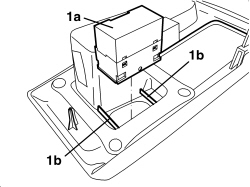

7030H10 HOOD CONTROL SWITCH - R.R.
- Path
- Procedures > 70 FITTINGS > 7030 SUN ROOF/GLASS PANEL > 7030H AUTOMATICALLY OPERATED HOOD > 7030H10 HOOD CONTROL SWITCH - R.R.
- Kind
- repair procedure (removal / refitting; the operation number is the code)
- Applies to
- engines: 2.2 JTS, 3.2 JTS; all production periods
- Interactive page
- https://sloeber94.github.io/elrnDB-aBrrSpdr/en/#/946004091
Applies to: engines: 2.2 JTS, 3.2 JTS; all production periods
 Removing
Removing
 Refitting
RefittingOp. 7040L37 GEAR LEVER TRIM - R.R
1. Remove the hood control switch (1a) releasing it from the trim retainers (1b).

Applies to: engines: 2.2 JTS, 3.2 JTS; all production periods
Refitting
Removing- Check that the hood control switch is not damaged.
- Place the hood control switch in position and attach it to the trim retainers.